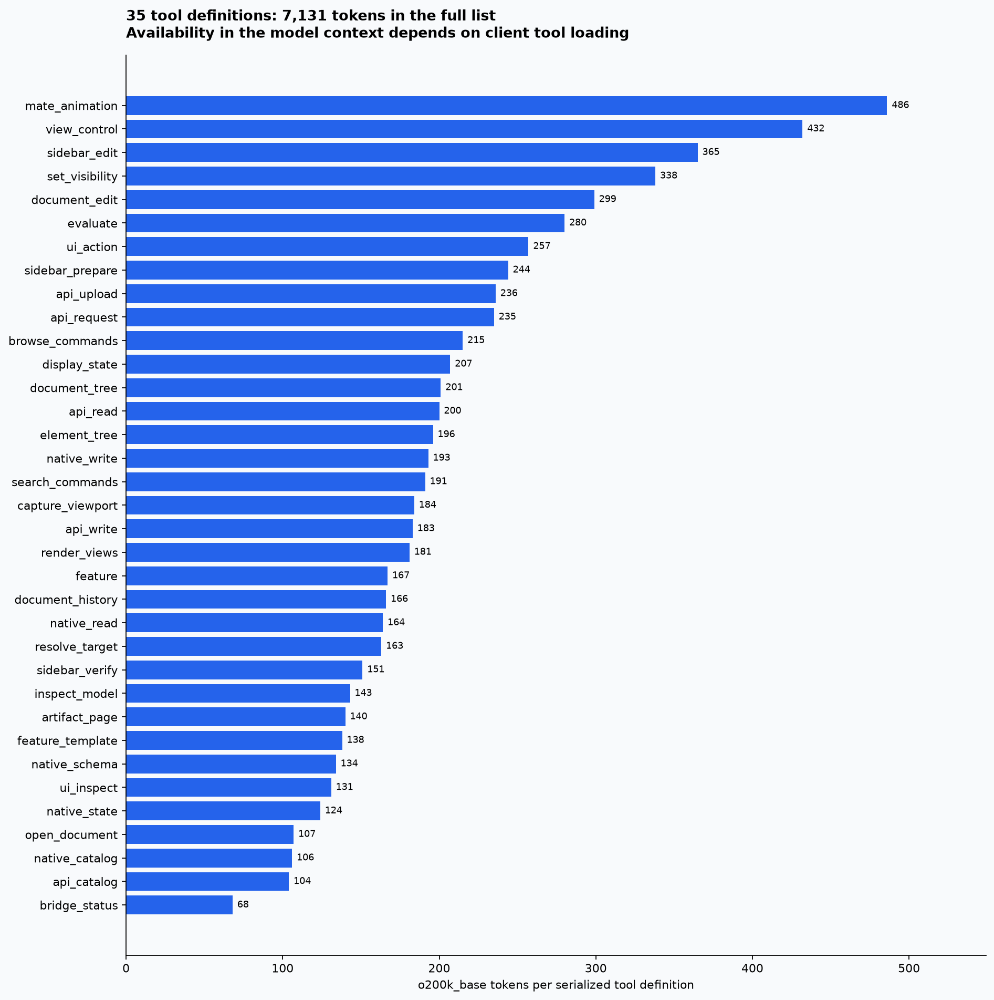
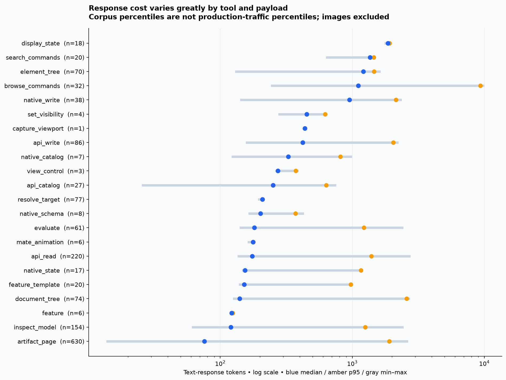
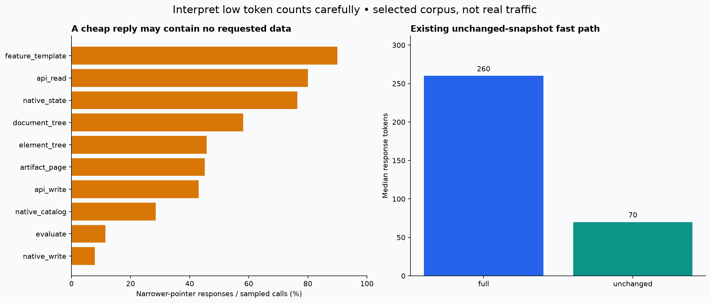
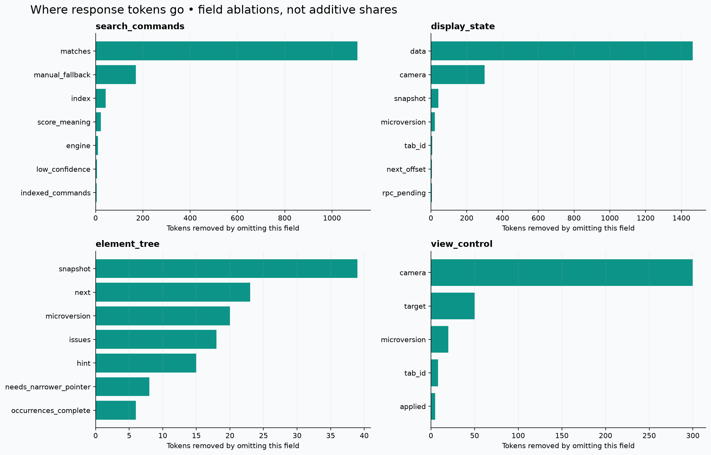
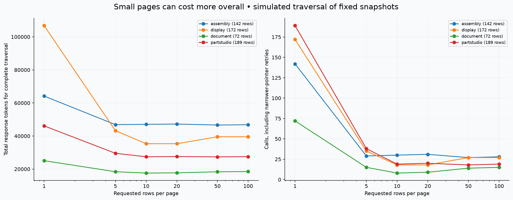
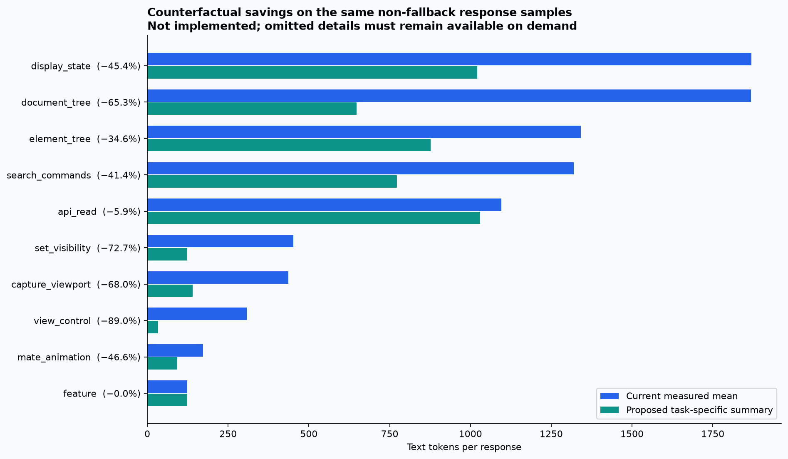
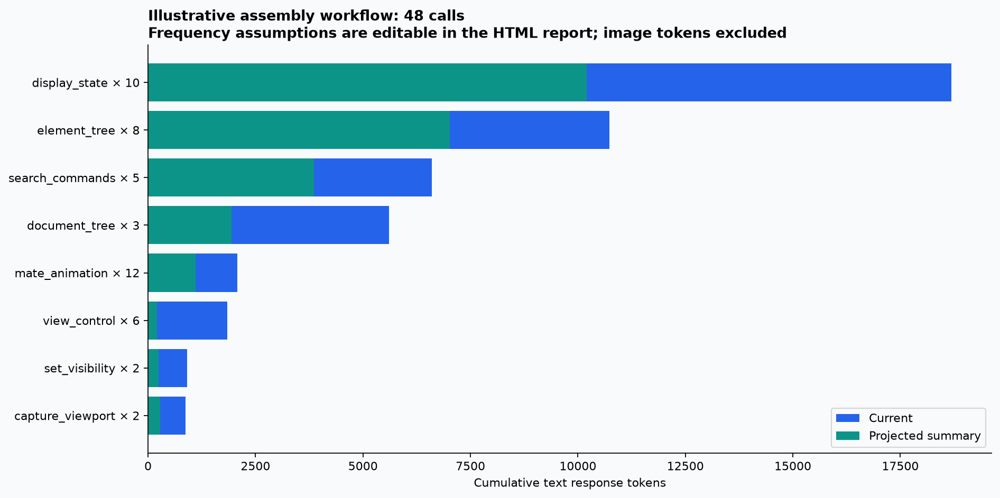

New: actual command frequencies and weighted costs from two threads →
v0.4.0 · 7 October 2026 · Read-only audit
Full analysis and method · Response CSV · Machine-readable results
Click a column heading to sort. A dash means no response sample, not zero cost. Schema cost is separate from response cost.
Call counts below are assumptions. Costs use measured means; proposed summaries are not implemented. Text outputs only. No image cost is included.
Schema list size: tokens, separate from this total. Whether all schemas are in context depends on client loading.





